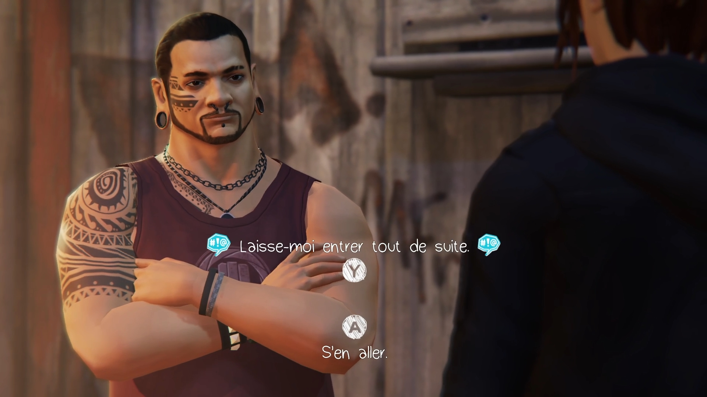
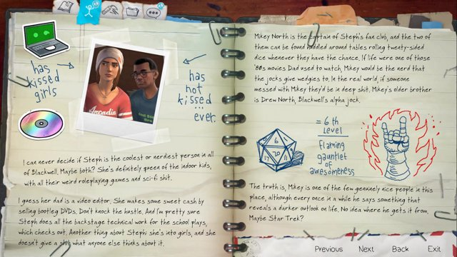

Backtalk & lisibilité des intéractions
Analyse du système de joute verbale : lisibilité des indices de dialogue, fenêtre de réponse, sentiment de maîtrise et impact sur la narration.
Le Backtalk est la mécanique signature de Before the Storm.
Là où Life is Strange donnait à Max le pouvoir de rembobiner le temps —
corriger, effacer, recommencer — Chloé, elle, se bat avec les mots et assume chaque réplique.
C'est un choix narratif fort qui change radicalement ce que je teste : il ne s'agit plus de vérifier qu'une mécanique
de correction fonctionne, mais que la joute verbale donne vraiment l'impression d'être Chloé.
Est-ce que le joueur se sent intelligent quand il gagne ? Frustré à juste titre quand il perd ?
La première confrontation avec le videur du concert pose bien les bases — le joueur comprend intuitivement qu'il faut chercher quelque chose dans ce qui est dit. Mais le jeu ne donne aucune indication claire sur ce qui constitue une "bonne" réplique, ni sur les conséquences d'un échec. On joue un peu à l'aveugle, ce qui peut frustrer les joueurs moins à l'aise avec la lecture rapide des dialogues.

La lisibilité des objets intéractifs suit la même logique : certains éléments clés — le journal de Chloé, les graffitis — sont évidents, d'autres nécessitent de ratisser chaque recoin sans indice visuel particulier.
Cohérence des personnages
Vérification de la cohérence psychologique des personnages à travers leurs choix, leur langage, leurs réactions et la liberté laissée au joueur.
La cohérence des personnages est l'un des piliers les plus sensibles à tester dans un jeu narratif à choix multiples. Chaque décision du joueur doit rester crédible dans la bouche et le corps du personnage — sinon l'immersion s'effondre.
Chloé est le personnage le mieux calibré de l'épisode. Sa colère, son humour noir, sa façon de tout transformer en défi — tout ça reste cohérent quelle que soit l'option choisie. Même quand le joueur opte pour une réplique plus douce, on sent que c'est Chloé qui la dit, pas un personnage générique. C'est rare et c'est fort.
Rachel Amber est plus complexe à évaluer. Volontairement mystérieuse, elle oscille entre charme magnétique et comportement imprévisible. La scène de la forêt en feu est à ce titre troublante : son passage soudain de la détresse à une forme d'exaltation est puissant narrativement, mais il peut dérouter le joueur qui n'a pas encore les clés pour comprendre qui elle est vraiment. Est-ce un choix assumé ou un manque de lisibilité émotionnelle ? La question mérite d'être posée au studio.
Les personnages secondaires — David, Eliot, le père de Rachel — remplissent leur rôle sans toujours convaincre pleinement. Eliot notamment manque de nuance dans cet épisode : il est positionné comme une menace potentielle sans que le joueur ait suffisamment d'éléments pour comprendre ses motivations réelles.
Gameplay & navigation
Analyse de la fluidité des déplacements, de l'ergonomie des menus et des transitions entre exploration et cinématiques.
Before the Storm est un jeu narratif, mais le gameplay et la navigation dans les environnements participent pleinement à l'immersion. La façon dont Chloé se déplace, interagit avec son espace, explore ou fuit — tout ça raconte quelque chose sur qui elle est.
Les déplacements sont fluides et sans friction notable. On ne se bat pas contre la caméra, on ne cherche pas ses repères. C'est une base saine qui laisse toute la place à la narration. En revanche, certaines zones de transition entre les environnements manquent de clarté : le passage du lycée au parking, ou de la salle de concert aux coulisses, peut désorienter le joueur qui ne sait pas toujours dans quelle direction progresser.
L'ergonomie des menus est globalement propre, mais le journal de Chloé — pourtant central dans la construction de son identité — est trop discret. On peut facilement passer à côté de ses entrées sans réaliser leur importance narrative. Pour un studio, c'est un point d'attention : si un élément est clé dans la compréhension du personnage, il doit être suffisamment mis en valeur sans pour autant briser l'immersion.

Enfin la fluidité entre exploration et cinématiques est bien gérée dans l'ensemble — les transitions ne cassent pas le rythme. La scène d'ouverture du concert en est le meilleur exemple : on glisse naturellement de l'exploration à la cutscene sans rupture brutale.
Rythme émotionnel et pacing
Évaluation de l'alternance entre scènes calmes d'exploration, moments de tension dramatique et temps forts narratifs.
Le rythme émotionnel est probablement l'axe le plus difficile à tester dans un jeu narratif. Il ne s'agit pas de mesurer une performance technique mais de ressentir — et d'identifier — les moments où le jeu respire bien, et ceux où il perd le joueur.
L'épisode 1 démarre lentement, et c'est assumé. La première heure est une longue introduction à Arcadia Bay, au lycée Blackwell, à la vie de Chloé. C'est un pari risqué : les joueurs peu familiers du genre peuvent décrocher avant que l'histoire ne s'emballe vraiment. Le studio devrait s'interroger sur la façon de densifier émotionnellement cette ouverture sans en trahir le ton contemplatif.
La bande son signée Daughter est l'un des atouts majeurs du jeu. Elle ne commente pas l'action — elle la ressent. Chaque morceau est posé au bon moment, avec une retenue qui renforce plutôt qu'elle n'écrase. C'est un exemple rare de direction artistique sonore parfaitement calibrée.
Le point culminant de l'épisode — la scène de la forêt en feu — est un vrai moment de bascule émotionnelle. Le pacing s'accélère brutalement, les choix se font plus lourds, la musique monte. C'est exactement ce qu'on attend d'un bon premier épisode : laisser le joueur sur une promesse forte. La mécanique de tension fonctionne, mais la transition depuis les événements du théâtre mériterait d'être mieux préparée — l'escalade émotionnelle arrive presque trop vite.